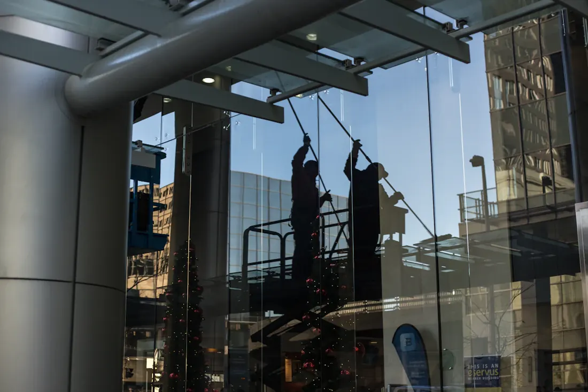

Commercial Window Cleaning in Jacksonville, FL
Commercial window cleaning in Jacksonville keeps storefronts, offices, and low-rise buildings looking presentable to every customer who walks by. Service is available as a one-time deep clean or a recurring contract, priced per pane of exterior glass and scheduled around your business hours so cleaning never gets in the way of customers.
Call Now for a Free Estimate
What Does Commercial Window Cleaning Involve?
A commercial visit typically covers storefront glass, entry doors, and ground-level or low-rise office windows. Glass is rinsed, scrubbed, rinsed again, and squeegee-dried using the same core technique as residential work, scaled up with extension poles and water-fed brushes for taller storefronts. Frames and door glass get the same attention as the main windows, since smudges near door handles are usually the first thing customers notice.
For recurring accounts, the crew works from a set route and schedule each visit, so the building stays on a predictable maintenance cycle instead of only getting cleaned when someone finally notices the grime.
When Do You Need Commercial Window Cleaning?
New businesses often book an initial deep clean before opening to clear construction dust and film left by protective window coatings. Established businesses along busy Jacksonville corridors typically move to monthly recurring service once they notice glass looking dull between cleanings, especially storefronts near the beach that pick up salt residue faster than inland locations.
Property managers overseeing multiple tenants often bundle window cleaning with other exterior maintenance to keep the whole property consistent.
Why Does Storefront Glass Get Dirty So Quickly?
Ground-level storefront glass takes a beating from vehicle exhaust, road dust, sprinkler overspray, and constant hand contact near entry doors. Add Jacksonville's salt air and seasonal pollen on top of that, and glass that looked clean two weeks ago can already show a visible film. Unlike residential windows that mostly face weather, commercial glass also deals with daily human traffic, which speeds up smudging around handles and lower panels.
What Affects the Cost of Commercial Window Cleaning in Jacksonville?
Commercial pricing is generally quoted per pane for exterior-only service, typically in the $7.50 to $9.30 range for storefront and low-rise glass, though the final number depends on a few factors:
- Number and size of panes — more glass means a higher total but often a lower per-pane rate.
- Access difficulty — second-story or hard-to-reach glass takes longer to work safely.
- Frequency — recurring monthly accounts typically get a better rate than one-time visits.
- Interior glass — adding interior office or lobby glass increases labor time similar to residential jobs.
One-Time Cleaning vs. Recurring Contract: Which Do You Need?
A one-time cleaning fits a specific event, like a grand opening, a photo shoot, or clearing construction residue before a business opens. A recurring contract makes more sense for any storefront or office with regular customer foot traffic, since it keeps glass consistently presentable instead of letting it visibly decline between occasional cleanings. Most Jacksonville storefronts that switch to monthly recurring service do so after noticing how fast salt film and pollen build back up after a single one-time clean.
Frequently Asked Questions
How often should a storefront get commercial window cleaning?
Most Jacksonville storefronts and offices with regular foot traffic do best on a monthly schedule. Businesses right on the coast or along dusty construction corridors sometimes move to every two weeks during peak pollen season.
Can commercial cleaning be scheduled outside business hours?
Yes. Early morning, evening, or weekend scheduling is available for businesses that do not want cleaning equipment or ladders near the entrance during open hours.
Do you handle multi-story office buildings?
Low-rise buildings up to a few stories are handled with extension poles, water-fed brushes, and stabilized ladder work. Taller high-rise buildings requiring rope access or lift equipment are evaluated on a case-by-case basis.
Is a contract required for recurring commercial service?
No. Recurring commercial cleaning in Jacksonville is available on a month-to-month basis, and you can pause or adjust frequency as your needs change.
Keep Your Storefront Looking Sharp
Get a per-pane quote for a one-time or recurring commercial cleaning schedule.
Call (904) 944-7358